活动主视觉系统 发布会与终端场景延展
这组内容以活动传播为核心，先建立清晰的主视觉语言，再延展到现场舞台、电子屏、 门店陈列和横版物料，让品牌信息在不同触点里保持同一套识别。
类型 / TYPE
活动视觉设计
场景 / SCENE
发布会 · 门店 · 现场屏幕
输出 / OUTPUT
主 KV · 横竖版物料 · 终端延展
重点 / FOCUS
统一识别 · 信息层级 · 场景落地
从主视觉到现场落地
这里保留完整的活动项目链路：主视觉先确定情绪和识别，再根据发布会、门店和传播渠道重新组织版式与信息。
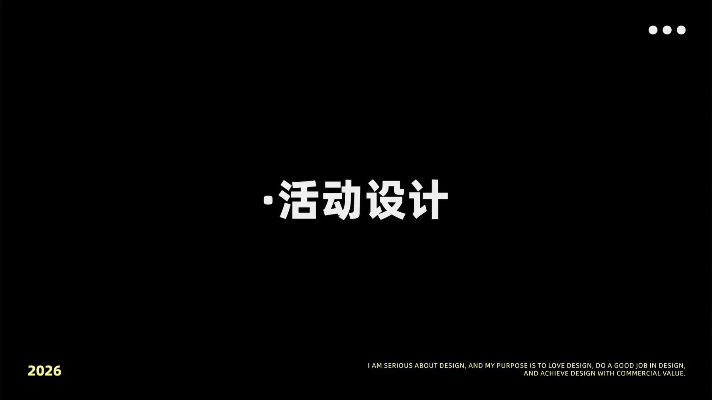
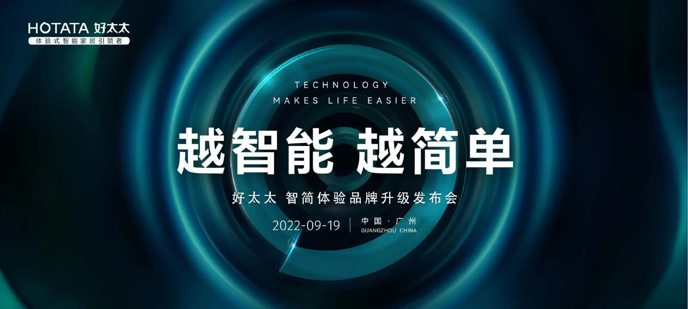
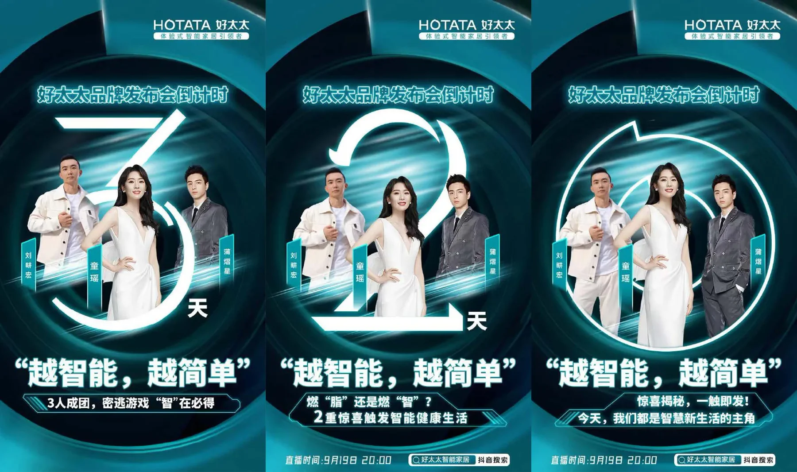
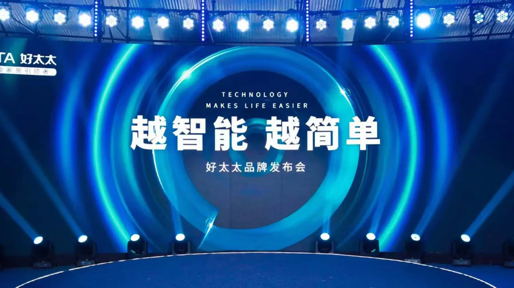
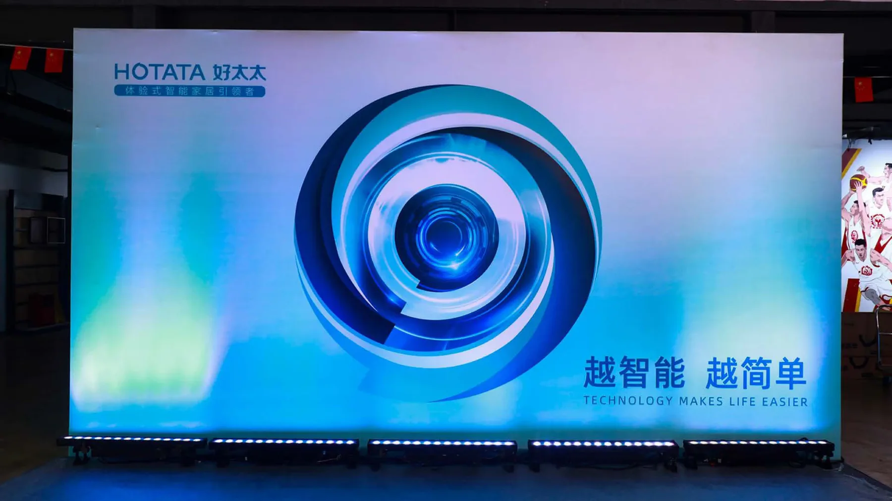
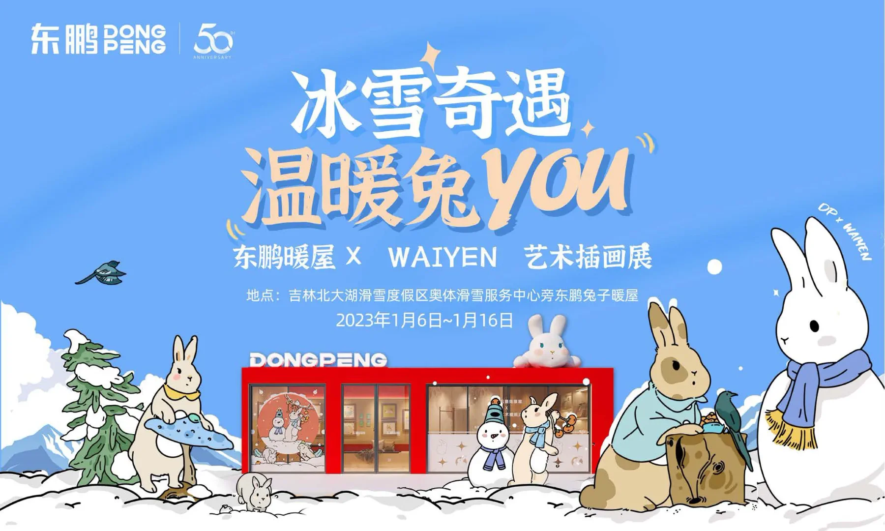
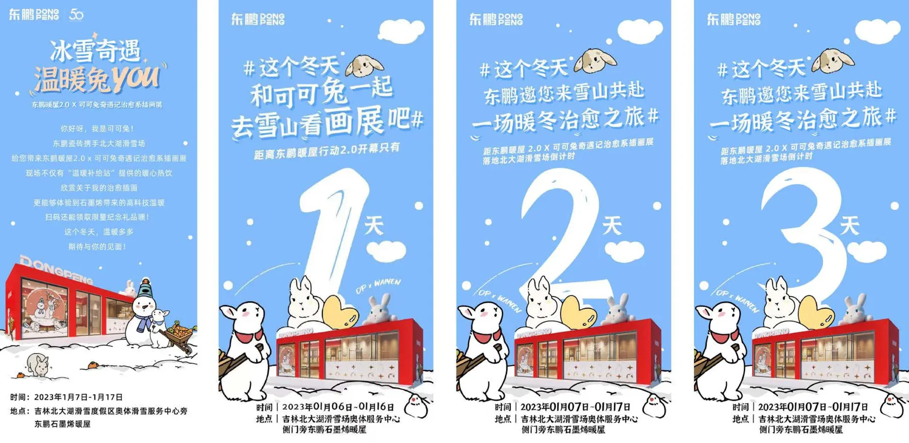
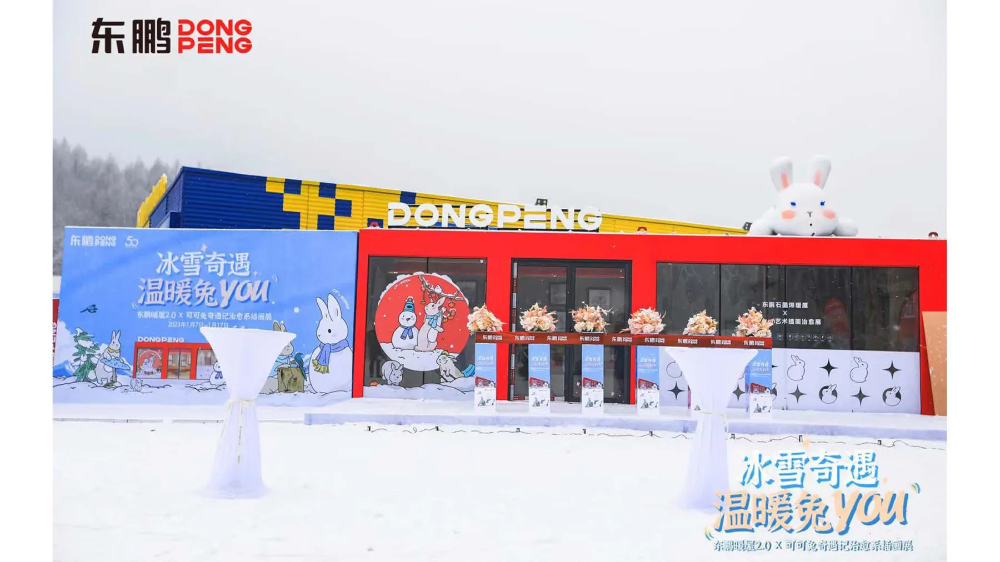
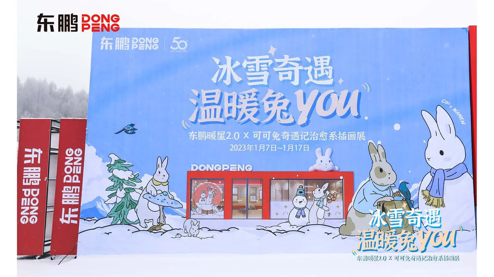
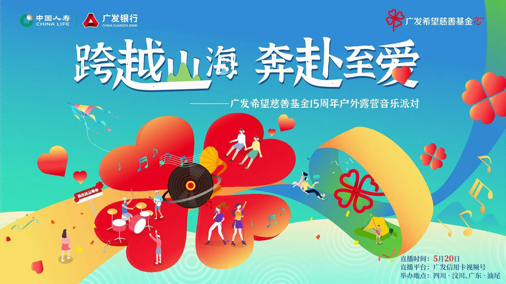
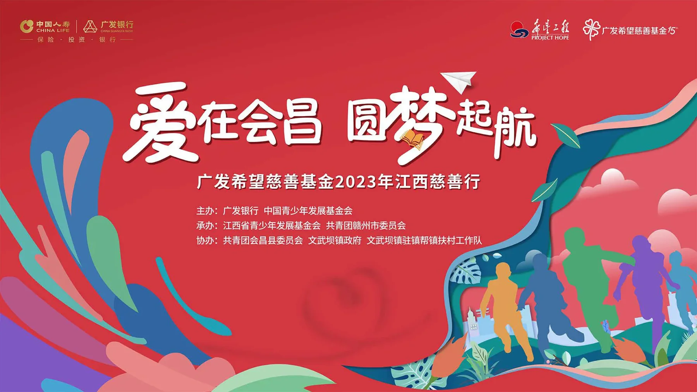